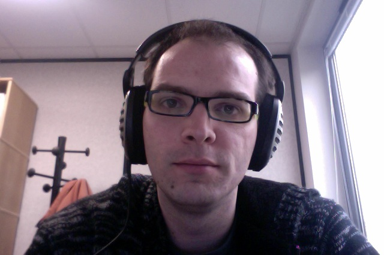

{% include JB/setup %}

<div class="row-fluid">
  <div class="span9">
		<p>
			<strong>Hervé Bredin</strong> received his PhD on talking-face biometric authentication from <strong>Telecom ParisTech</strong> (France) in 2007.<br/>
			In 2008, he joined <strong>Dublin City University</strong> (Ireland) to work on video summarization techniques applied to user-generated content.<br/>
			He has been a permanent <strong>CNRS researcher</strong> since October 2008 -- at <strong>IRIT</strong> (Toulouse, France) in the SAMoVA group until September 2010, and at <strong>LIMSI</strong> (Orsay, France) in the Spoken Language Processing group since then.<br/>
			His current research interest concerns multimodal fusion approaches, applied to several tasks such as semantic concept detection in videos, (multimodal) speaker identification in multimedia documents and the extraction of the narrative structure of fictional audiovisual documents (such as TV series and movies).
		</p>

	  <!-- <h2>News</h2>
{% assign posts_list = site.posts %}
{% for post in posts_list  %}
	<li><span><strong>{{ post.date | date: "%Y-%m-%d" }}</strong></span> | <a href="{{ BASE_PATH }}{{ post.url }}">{{ post.title }}</a></li>
{% endfor %}
{% assign posts_list = nil %} -->
  </div>
  <div class="span3">
	  
      <dl>
	  <div class="row-fluid">
		  <div class="span6"><a href="http://scholar.google.com/citations?user=obEwWjZOI0cC"></a></div>
	      <div class="span6"><a href="http://fr.linkedin.com/in/hbredin"></a></div>
	  </div>
        <dt>e-m@il</dt>
        <dd>lastname@limsi.fr</dd>
        <dt>mail</dt>
        <dd>LIMSI-CNRS</dd>
		<dd>BP 133</dd>
		<dd>F-91403 ORSAY CEDEX</dd>
        <dt>phone</dt>
        <dd>+33 (0)1 69 15 75 95</dd>
	  </dl>
	</div>
</div>
